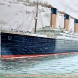
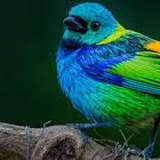

BNP Paribas · Equanimity
Data Science & development missions
- Advanced predictive models
- Natural language processing solutions
- Data workflow optimization for complex environments
Open to opportunities
Data Science & Artificial Intelligence Engineer
Engineer specialized in Applied Mathematics, passionate about Data Science and Artificial Intelligence: Machine Learning, NLP and Big Data analysis.

My name is Adrien Montaigne, an engineer specialized in Applied Mathematics. Passionate about Data Science and Artificial Intelligence, I am currently seeking an opportunity. With significant experience as a Data Scientist and developer, I have developed strong expertise in Machine Learning, NLP (Natural Language Processing) and Big Data analysis.
During my missions at BNP Paribas and Equanimity, I implemented advanced predictive models, designed natural language processing solutions, and optimized data workflows for complex environments. My academic background at CY Tech and a semester abroad at Anglia Ruskin University strengthened my skills in statistics and programming, allowing me to successfully carry out various projects, from sentiment analysis to storage consumption prediction.
The methods and tools I have used across my projects and missions.
Data Science and AI projects, from NLP to computer vision. Each one comes with its source code on GitHub.
12 projects
This project aims to develop a model capable of distinguishing real images from AI-generated images. As part of this project, I designed a CNN (Convolutional Neural Network) model from scratch and optimized its hyperparameters. Additionally, I developed a second model based on transfer learning using a ResNet architecture.
Source code — Classification of real vs AI-generated imagesThis project focuses on analyzing public sentiment about different vaccines using various parameters such as hashtags, popularity, user verification status, and tweet engagement. The objective is to identify the characteristics of key users and measure the general public's sentiment towards each vaccine.
Source code — Sentiment analysis on vaccinesThe objective of this project is to automatically recognize the sport being played in a video by analyzing the movements of participants. For this project, we used CNNs to extract spatial features of the movements, followed by RNNs to capture temporal dynamics, enabling the recognition of the sport being played in the video.
Source code — Sport recognition from videoThis project uses advanced machine learning techniques, such as ensemble learning and algorithms like Random Forest, Logistic Regression, and SVM, to predict diabetes. By exploring different performance metrics and testing multiple models, the objective is to achieve optimal predictions and understand the factors influencing diabetes risk.
Source code — Diabetes predictionThis project aims to extract Earnings Per Share (EPS) data from financial reports in HTML using web scraping and regex techniques. By leveraging BeautifulSoup for HTML parsing and a series of regex models to identify EPS values, the objective is to develop a reliable method for extracting financial information.
Source code — EPS extraction
This project explores and analyzes the use of machine learning algorithms such as RandomForest to predict the survival of Titanic passengers. By focusing on the application and performance of this model, the objective is to understand how various factors influence survival chances.
Source code — Titanic survival predictionThis project focuses on maximizing pizza deliveries by modeling a city as an NxN grid. By applying graph theory concepts and optimized algorithms, it identifies the block receiving the most deliveries within a large urban network. The emphasis is on reducing complexity to efficiently handle large datasets.
Source code — Pizza delivery optimizationThis project aims to optimize task allocation in a distributed network using metaheuristic algorithms such as Firefly or PSO. Based on cost and execution time data for each task and node, the objective is to minimize resource usage while maximizing efficiency.
Source code — Metaheuristic optimizationThis project uses NLP models such as DistilBERT, BERT, RNN, and LSTM to detect fake news from various datasets. By leveraging advanced preprocessing and fine-tuning techniques, the objective is to improve the accuracy and robustness of the models against diverse and complex data.
Source code — Fake news detectionThis project uses machine learning models (SVM, KNN, Random Forest) to classify music into genres, utilizing the GTZAN dataset. Audio features are extracted using Librosa and organized with Pandas to train the models.
Source code — Music genre recognitionThis project aims to predict Bitcoin prices using historical data collected via the Binance API, covering the period from August 2017 to July 2023. Predictive models, including neural networks, are used to analyze trends and anticipate market fluctuations.
Source code — Bitcoin price prediction
This project uses transfer learning on pre-trained models to predict bounding boxes around birds in images. After data preparation, the goal is to optimize object localization through computer vision techniques and model training.
Source code — Bounding box detection for birdsBetween industry missions and engineering studies.
A foundation in statistics and programming.
Strengthened skills in statistics and programming.
I am currently looking for an opportunity. A project, a question, an offer: feel free to get in touch.
or directly at pro.montaigne.a@gmail.com